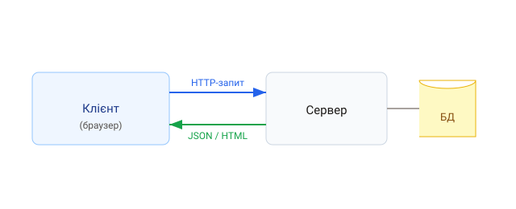

1. Що таке бекенд
Бекенд (back-end) — це серверна частина застосунку: вона працює не в браузері користувача, а на сервері. Бекенд обробляє запити, виконує бізнес-логіку, звертається до бази даних і повертає дані клієнту (фронтенду).
2. Модель клієнт-сервер
- Клієнт (браузер) надсилає HTTP-запит;
- Сервер приймає запит, виконує логіку, звертається до БД;
- сервер повертає відповідь (зазвичай JSON або HTML).

На фронтенді ви вже бачили клієнтський бік — fetch до API. Тепер побудуємо
той бік, що відповідає на ці запити.
3. Node.js як середовище
Бекенд на JavaScript пишуть у середовищі Node.js, яке виконує JS поза браузером — з доступом до файлової системи, мережі й бази даних.
// найпростіший HTTP-сервер на «чистому» Node
const http = require('http');
const server = http.createServer((req, res) => {
res.writeHead(200, { 'Content-Type': 'text/plain; charset=utf-8' });
res.end('Привіт із сервера!');
});
server.listen(3000, () => console.log('Сервер на http://localhost:3000'));
Писати сервер на «голому» http незручно вже за кількох маршрутів. Тому на
практиці використовують фреймворк — найпопулярніший це Express, якому
присвячено наступний урок.
4. Типові задачі бекенду
- надавати REST API (або GraphQL);
- працювати з базою даних (CRUD);
- автентифікація та авторизація користувачів;
- валідація й обробка даних;
- інтеграція із зовнішніми сервісами (оплата, пошта).